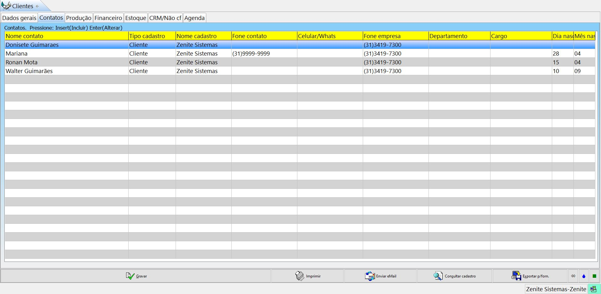
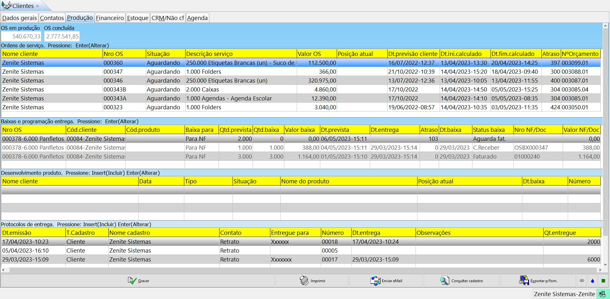
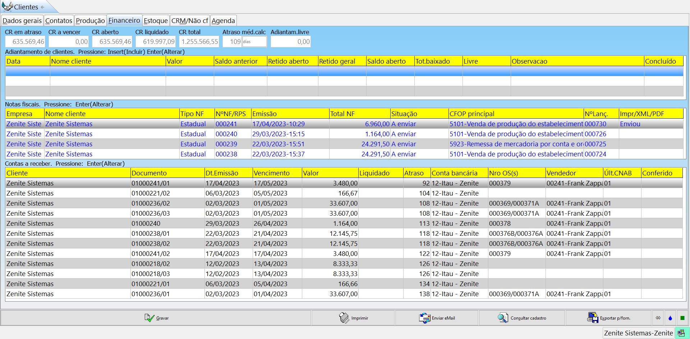
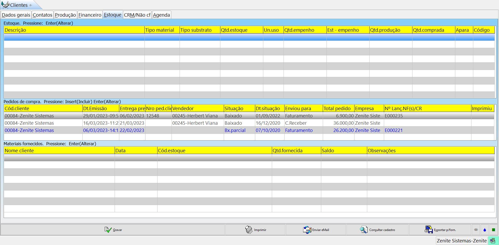
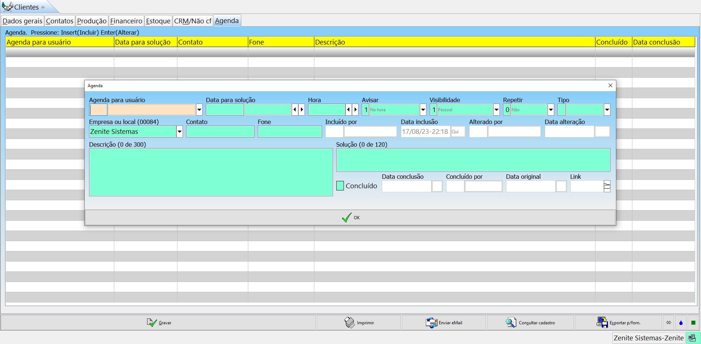

Aqui ficará a lista com todos os clientes cadastrados no sistema. No menu de filtro, temos opções para todos as páginas e após o traço horizontal, temos opções de filtros exclusivos para cada página.
F11 - opções
Campos na grade: Altera os campos (colunas) apresentados na grade de acordo com a preferência do usuário. Substiruir campos: Substitui todos os valores de determinado campo por um novo valor. É usado apenas pelo suporte em situações de corrompimento de dados do sistema. Jamais será usado para corrigir falha ou má utilização do usuário. Excluir por filtro: Exclui um lote de registros por filtro específicos e seguem as mesmas regras do campo "substituir campo". Reindexar: Serve para recalcular os modulos e é usado em caso de comportamento estranho do sistema. É obrigatório que os usuários não estejam usando o sistema no momento da reindexação. Deve ser usado apenas no computador do servidor do sistema, exceto no GS e na versão WEB, nesses casos os arquivos podem ser reindexados em qualquer computador, porém ninguém poderá estar usando o sistema. Importar dados: É usado no início de uma implantação para importar os dados de clientes e fornecedores de outro sistema para o GE. Esse arquivo deverá estar no formato "TXT". Incluído/ alterado por: ou (Alt+Enter) - Inclui uma coluna que mostrará o último usuário que alterou o arquivo. Atraso médio: Envia a respectiva informação para a aba financeiro do cadastro do cliente. Ela será usada para cálculo do atraso médio no orçamento. Esse valor não é atualizado automaticamente! Suspender/ inativar lote: Suspende ou inativa os clientes por lote. grade Para esta opção, o sistema irá levar em consideração os títulos EM ABERTO lançados no "contas a receber" atrasados, e não, o campo "Atraso médio" no cadastro do cliente. O campo "Atraso médio" será utilizado para filtros, relatórios e preencher o parâmetro "AT" do orçamento. Substituir vendedor: Trânsfere todos os clientes da carteira de um vendedor para outro vendedor, em um caso de demissão por exemplo.
Menu inferior
Posição geral CRM: --- Posição produtos: --- OS/Orcs abertos: Mostra todos os trabalhos em produção de determinado cliente de forma prática. Enviar e-mail: É somente um atalho para abrir o aplicativo de email. O Outloock deve ser definido como programa padrão para essa opção funcionar. Imprimir: Possibilita a impressão das informações dos cliente, não é possível alterar os campos mostrados nesse relatório.
Incluir
Código: Código do cliente no sistema Situação: Situação do cliente Dt.situação: Data da alteração da situação Motivo situação: Motivo da alteração da situação Grupo 1 | 2: Segmentação do cliente. 1- mais genérico, 2- mais específico ABC: Categoriza os clientes em níveis e é usado para filtros e relatórios. É alterado manualmente pelo cadastro do cliente ou automaticamente pelo menu (financeiro > relatórios fixos > curva ABC) gradeDeve ser marcado o campo " Lançar ABC no cadastro" para o índice aparecer no cadastro do cliente e ser usado nos filtros e relatórios.
Inscr. estadual: Só é necessário para empresas contribuintes com o ICMS (estadual).
Inscr. municipal: Só é necessário para empresas contribuintes com o ISS (municipal). Contrib.ICM: Indica se a empresa é contribuinte de ICMS. Inscr.mun./Id.extr: Inscrição municipal ou identificação estrangeiro, caso seja cliente do exterior.
Contato compras: Sairá impresso na carta proposta do orçamento.
Contato financeiro: Sairá impresso nas cartas de cobrança.
gradePadrão de endereço: Rua, número - complemento. | O número sempre deverá vir após a virgula e o complemento após o traço. Caso não haja número, devemos acrescentar "S/N" após a vírgula.
Para clientes no exterior, acrescentamos "EX" no campo "UF1"(estado).
Endereço faturamento: Será mostrado no faturamento da nota.
Endereço cobrança: Será mostrado na carta de cobrança.
Endereço entrega: Será mostrado na entrega da NF. Ref.endereço ou nome país: Endereço ou nome do país. Cód país: Informa o código do país Transport.padrão: Define uma transportadora padrão. Frete padrão: Defini se o frete padrão é incluso ou a pagar
Distância: Deve ser acrescentado manualmente e pode ser usado em filtros, relatórios e cálculos programáveis.
Nro Suframa: Só é preenchido para clientes no zona franca de Manaus.
Vendedor: Predefine um vendedor para esse cliente.
%CV | %CA | %CE | %CI |: Caso marcado, irá sobrepor a comissão estipulada no cadastro do próprio vendedor. Todas as outras comissões funcionarão da mesma forma.
Prazo pgto padrão: Defini um prazo de pagamento padrão para o orçamento.
Markup: Markup padrão do cliente.
Crédito máximo: Defini um crédito máximo para o cliente.
Atraso médio: Atraso médio do cliente. Será considerado no orçamento.
Cobrança padrão | Conta padrão: Padronizações específicas para o cliente.
Pg. Balcão | %Desc.balcão: ---
Dt.cadastro: Data do cadastro.
Dt.últ.contato: Data do último orçamento feito.
Dt.últ.compra: Data da última OS gerada.
Empr. padrão: Escolhe o CNPJ que fára o trabalho daquele cliente. Isso pode variar impostos no orçamento.
Data última campanha | visita | próx visita | próx contato: São acrescentados automaticamente através do menu CRM.
Cobrança padrão: Dentro do tipo de cobrança, irá especificar como será feito o recebimento.
Exemplo: Banco simples > depósito, transferência, boleto e pix.
- Banco descontada: Título que teve o pagamento antecipado.
- Factoring: Título que teve o pagamento antecipado junto a uma empresa que não é uma instituição financeira.
- Banco caucionada: Título que foi acordado em ser recebido mediante uma garantia/ caução.
- Protesto: Título que foi enviado ao cartório para registro nos órgãos competentes para indicar a inadimplência/ não recebimento.
Origem cliente: Defini de onde veio aquele cliente. Grupo empresarial: Define à qual grupo empresarial esse cliente pertence. Observações: Observações que serão mostradas no pré-faturamento. Reter "Impostos": Define os impostos que serão retidos no momento da geração da NF.
Consultar cadastro: Irá mostrar a situação da empresa na SEFAZ. Se ela está habilitada, o número da inscrição estadual, etc. Exportar p/forn.: Irá duplicar o cadastro e enviar a cópia para o cadastro dos fornecedores. É usado quando o cliente também é um fornecedor.

Contatos: Aqui ficarão todos os contatos vinculados ao cliente. Poderão ser acrescentados novos contatos para esse cliente por aqui ou pelo menu "contatos".

Produção: Aqui ficarão todos as Informações das O.S.. Todas as tabelas apresentadas aqui, são atalhos para agilizar o acesso aos menus respectivos. O.S. em produção: É o valor em R$ de todas as O.S.s emitidas por esse cliente que ainda não foram baixadas. O.S. concluída: É o valor em R$ de todas as O.S.s emitidas por esse cliente que já foram baixadas.

Financeiro: Aqui ficarão todos as Informações financeiras. Todas as tabelas apresentadas aqui, são atalhos para agilizar o acesso aos menus respectivos. CR em atraso: São as contas a receber atrasadas. CR a vencer: São as contas a receber que não foram pagas, mas que ainda não venceram. CR aberto: (CR em atraso + CR a vencer). CR liquidado: São todas a contas a receber que foram pagas. CR total: (CR aberto + CR liquidado). Atraso médio: Atraso médio do cliente. Será considerado no orçamento caso seja enviado através do menu F11. Adiantam.livre: É o adiantamento liberado ao cliente que ainda não foi usado.
grade Caso algum campo de totais não esteja apresentando valores, provavelmente o valor ultrapassou o máximo de caracteres aceitos pelo campo. Essa informação continuará disponível no respectivo menu.

Estoque: Aqui ficarão todos as Informações do estoque. Todas as tabelas apresentadas aqui, são atalhos para agilizar o acesso aos menus respectivos. Funciona da mesma forma das abas anteriores.
CRM/Não cf: Aqui ficarão todos as Informações do CRM. Todas as tabelas apresentadas aqui, são atalhos para agilizar o acesso aos menus respectivos.

Agenda: Aqui ficarão todos as Informações da agenda. Empresa ou local: Relaciona o lembrete a algum cliente. Agenda para usuário: Indica para qual usuário é o lembrete.